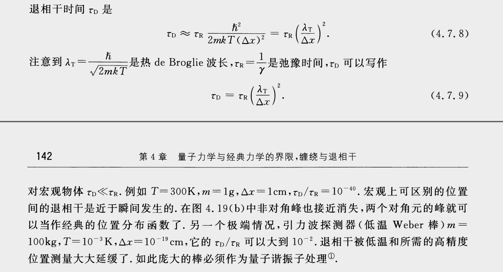

嗯，首先，如果你真的做一个薛定谔的猫的实验：真猫，活猫，放在箱子里，毒气瓶，由连着衰变源的盖革计数器触发，然后你关上箱子，等着。
那么，这个实验，从衰变粒子被探测器所探测到，往后的装置，*都跟量子力学半毛钱关系也没有*。管你是毒气瓶，还是核弹，是喵还是汪，是保险柜还是漏气的箱子，是人去观察还是由相机记录，*都跟量子力学半毛钱关系也没有*。经过了半衰期的时间之后，猫有 50% 的概率被毒死，有 50% 的概率还活着，两种情况为*经典的概率叠加*，一切都如你经典的世界观所理解的那样，好了，该干嘛干嘛去～
那么，接下来的内容，我们就有两条路线可以写，①：科普经典概率叠加和量子态的叠加有神马区别。②：换个实验，不用真猫，换成与之类比的量子力学实验。
{% include header.html param="①" %}
经典概率叠加就是相加，$p_1+p_2$，简单吧。然而量子力学是怎么回事呢，它先把概率开根号了，然后相加，然后再平方，然后得概率 $(\sqrt{p_1}+\sqrt{p_2})^2$。表问我为神马这么蛋疼，就是实验发现微观世界居然是按照开根号的概率相加而不是概率直接相加运作的。
（民科狸：因为微观世界是用复数描述的！从实数到复数是人类文明对自然界认识的一次进步！）
奏凯！我这里讲的是很严谨的#看不懂系列#，不是脑洞的#不科学系列#！
概率开根号的东西叫作概率幅，是整个量子力学滴核心。开根号是复数域开模根，会多出相位的信息，各种量子力学现象都是由这个相位而起。背景讲太详细你们也看不懂，以下直接开讲结论。
为什么猫的叠加不是量子叠加呢？我们可以做个估算，就取猫身上 1 克的物质，假设某个瞬间，这团物质中的每一个原子都处于空间位置相距 1 厘米的相干叠加态，然后我们可以由主方程计算每个原子的量子态的时间演化过程，然后你会发现这个量子叠加态慢慢的就演化成经典叠加态了，这一过程叫作退相干。然而用慢慢这一词并不恰当，假设两种量子态间跃迁的弛豫时间为 1 微秒，则可估计退相干的时间为 $10^{-46}$ 秒。
$10^{-46}$ 秒！吓尿木有？这个退相干简直是瞬！间！发！生！或者说，整个活猫的庞大量子态，其实*从来就没有相干过*。
让大量原子之间保持相干是那么困难。所以，量子计算机才那么难做。所以，你看到的宏观世界，都如你经典理解的那样，概率直接叠加，不用开根号。
{% include header.html param="②" %}
如果把猫瘦身得只剩一个原子，而且控制它只有处于两个空间位置的可能的状态，那么实验上是可以实现这两种状态的叠加的，而且这种叠加是量子叠加。量子叠加可以有任意相对相位，两个态相消干涉称为“奇猫”，相长干涉称为“偶猫”。相消相长可以从概率的空间分布看出来，这个才是量子态叠加的奇妙现象。
然后人们会说你在逗我吗，一个原子也能叫猫吗，于是物理学家称之为“薛定谔的小猫崽（kitten）”，然后有一帮人就去研究怎样在更大体系上实现这样的“猫态”，称之为“把猫喂大”。然而离喂到真猫还远着呢。问题倒不在于宏观，把宏观的金属棒冷却到极低温，探测由引力波导致的极微小位移，这个体系是可以量子叠加的。真猫的问题在于体系太复杂，大量的原子，每一个原子都有相当显著的状态变化。如果我们有一天达到实现薛定谔的真猫的控制退相干的技术水平，我们就该实现阿伏加德罗常数个量子比特数的量子计算机啦。
龙桂鲁老师还提出另一种理解，把活猫死猫理解成猫在不同时间的状态的叠加，而不是要求每个原子间的叠加，然而目前实验上并没有观察到过一个体系跨越时间的状态叠加现象。
{% include header.html param="参考文献" %}
张礼《量子力学的前沿问题》第2版 141-142页
